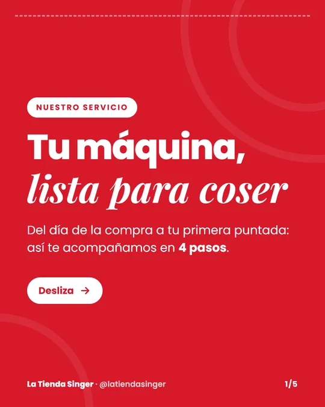
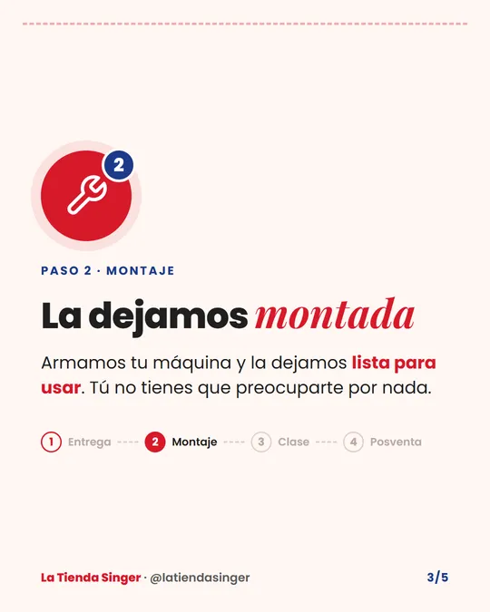
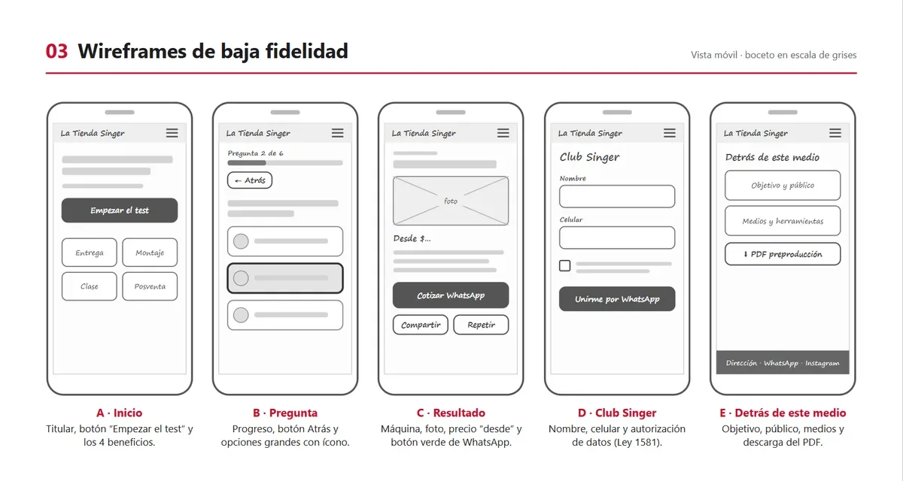
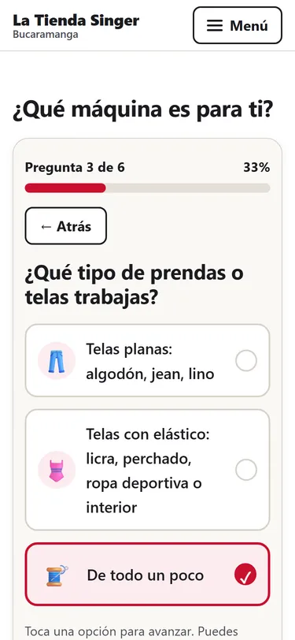
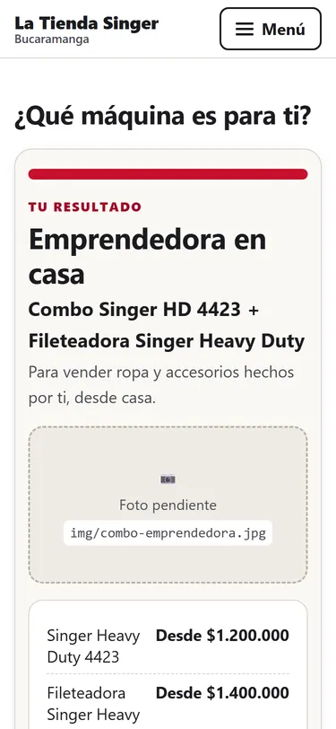

Red, cream and one italic wordRojo, crema y una palabra en itálica
The visual system behind every produced piece: a palette with one job per color, a two-font pairing, a fixed canvas grid, a set of components and six templates that a small team can reuse without a designer in the room.El sistema visual detrás de cada pieza producida: una paleta donde cada color tiene una función, dos tipografías, una retícula fija, un conjunto de componentes y seis plantillas que un equipo pequeño puede reutilizar sin un diseñador al lado.
Values are taken directly from the production files (carousel and infographic sources).Los valores salen directamente de los archivos de producción (fuentes de los carruseles y la infografía).
One job per colorUna función por color
Red stops the scroll, cream makes long text easy on the eyes, and blue is kept for navigation and numbers. All text pairings pass WCAG AA.El rojo detiene el scroll, el crema hace que leer sea descansado y el azul se reserva para navegación y números. Todas las combinaciones de texto cumplen WCAG AA.
Production palette · social and printPaleta de producción · redes e impreso
Presentation palette · strategy deckPaleta de presentación · documento de estrategia
The strategy deck uses a deeper, warmer red family (crimson, wine, espresso). The production palette brightens the red, adds blue for navigation and numbers, and moves the background to cream.El documento de estrategia usa una familia de rojos más profunda y cálida (carmesí, vino, espresso). La paleta de producción aviva el rojo, suma el azul para navegación y números, y lleva el fondo a crema.
Poppins informs, Playfair feelsPoppins informa, Playfair emociona
A geometric sans for everything that must be read fast, and a single italic serif word or short phrase per headline for the emotional beat. Only one per headline, so they never compete.Una sans geométrica para todo lo que se debe leer rápido, y una sola palabra o frase corta en serif itálica por titular para el golpe emocional. Solo una por titular, para que nunca compitan.
Paso 4 · Posventa
Seguimos contigo
Después de la compra te acompañamos con servicio posventa y repuestos originales.
Poppins
Aa Bb 123
400 · 500 · 600 · 700 · 800
Playfair Display
Aa Bb 123
700 italic
| RoleRol | FontFuente | Size / leadingTamaño / interlínea |
|---|---|---|
| Cover titleTítulo portada | Poppins 800 | 116 px / 1.0, −3% |
| Cover accentAcento portada | Playfair 700 it. | 124 px |
| Slide titleTítulo diapositiva | Poppins 800 | 80 px / 1.03, −2% |
| Slide accentAcento | Playfair 700 it. | 88 px |
| BodyTexto | Poppins 400 | 38 px / 1.45 |
| KickerAntetítulo | Poppins 700 | 26 px, +14%, capsmayúsculas |
| FooterPie | Poppins 600 | 26 px |
Body is 38 px on a 1080 px slide, which is about 14 px once the slide fills a phone screen.El texto mide 38 px en una diapositiva de 1080 px: unos 14 px cuando la diapositiva ocupa la pantalla del celular.
A fixed canvas, so templates stay templatesUn lienzo fijo para que las plantillas sigan siéndolo

- CanvasLienzo
1080 × 1350 - Side marginsMárgenes laterales
90 - Top / bottom safe areaZona segura arriba / abajo
110 / 130 - Stitch line insetLínea de costura
50 - Footer baselineLínea del pie
56 from bottomdesde abajo - Text measureAncho de texto
max 880 - Infographic unitUnidad de la infografía
1u = W / 100
Content is centered vertically, so a slide with two lines and a slide with six still share the same top and bottom edges. The infographic uses one unit for every size, so it can be re-flowed for print or Story without redrawing.El contenido se centra en vertical: una diapositiva con dos líneas y otra con seis comparten los mismos bordes. La infografía usa una sola unidad para todas las medidas, así se reacomoda para impreso o historia sin redibujar.
The parts, rebuilt live in codeLas piezas, reconstruidas en código
Shown at roughly a third of their real size.Se muestran a un tercio de su tamaño real, aproximadamente.
The compare card and the product tiles appear in the templates below.La tarjeta comparativa y los mosaicos de producto aparecen en las plantillas de abajo.
Six slide types cover every postSeis tipos de diapositiva cubren cualquier post
The three carousels are built from the same six templates. A new post means new copy, not a new design.Los tres carruseles salen de las mismas seis plantillas. Un post nuevo significa texto nuevo, no un diseño nuevo.




From grey boxes to the final screenDe cajas grises a la pantalla final
The quiz went through a navigation map and low-fidelity wireframes before any color was added.El test pasó por un mapa de navegación y wireframes de baja fidelidad antes de tener color.



